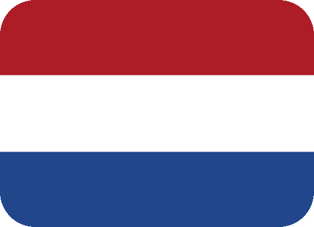
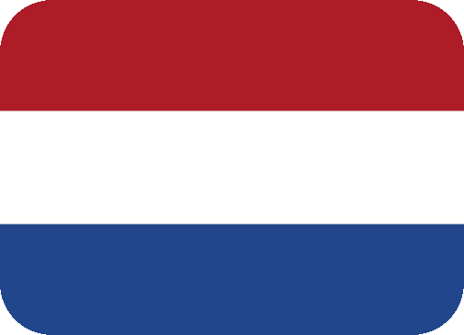

Bienvenue dans mon Portfolio. Ulrich, j'ai 19 ans. Né en 2002, c'est à Villeurbanne que j'ai grandi et étudié jusqu'au lycée. Ayant décroché un BAC STi2d en spécialité informatique (SIN) à la Martinière Monplaisir, j'ai donc décidé d'aller en BTS SIO afin de poursuivre dans le secteur de l'informatique.
J'ai pour passion l'Histoire, la géopolitique ainsi que l'astronomie. Je pratique de la musculation ainsi que les sports de comnats durant mon temps libre (MMA, K1, BJJ...).
Lycée ORT LYON
Je suis actuellement en BTS Services informatiques aux organisations (SIO) option SLAM à l'école ORT LYON 8. Celui-ci étant une formation informatique nous apprenant à inover dans ce domaine ainsi que dans le domaine réseau. Il fait suite à mon BAC STi2d spécialité SIN.BTS SIO
Lycée La Martinière Monplaisir LYON
J'ai effectué un bac STi2d option Système d'Information Numérique (SIN). Ce bac avait pour spécifité de nous enseinger la traversale ainsi que l'industrie et le développement durable. Nous avions en plus des cours sur la base du codage en front.Bac STi2d SIN
Ayant référé de ceci lors ma présentation, j'ai décroché un BAC STi2d en spécialité informatique (SIN) à la Martinière Monplaisir, où j'ai continué dans le cursus de l'informatique en BTS SIO afin de poursuivre dans le secteur de l'informatique.
Mes technologies préférées pour le développement web en front ainsi que la conception design.
Les langages que je préfère afin de programmer en back sur le web et l'architecture des base de données.
Mes outils que j'utilise pour le versioning, l'édition de code ainsi que l'orchestration de conteneurs.
Je maîtrise pour à ce jour 4 langues à savoir le français, l'anglais, l'espagnol ainsi que l'italien depuis maintenant plusieurs années. Ma soif de savoir m'empêche de me contenter de cela et chaque jour je perfectionne ma compréhension de ces langues où l'intérêt est d'atteindre la polyglossie. J'ai pour projet futur d'apprendre le portugais d'ici 2024, ainsi que le néerlandais et le mandarin pour 2026 car la compréhension de ces langues ouvrent les portes à de grandes choses.


 





J'ai créé une application web afin d'évaluer des jeux-vidéos, avec des notes /20 et trié en fonction de leurs genres et de leurs studios de développements. Avec une base de données en MySQL.

J'ai développé une site à l'occasion de mon stage dans une instance du gouvernement. Celle-ci gérait les mouvements des employés au sein de l'entreprise.

Il s'agît d'un fork GitHub de tableaux représentant les différentes cryptomonnaies. Pour que cette application logicielle puisse interagir avec la blockchain elle doit se connecter à un nœud Ethereum, Bitcoin... Cette dernière affiche en temps réel avec la valeur des cryptomonnaies, ainsi que la courbe que celle-ci parcoure.

Il s'agît d'un honeypot à faible interaction, c'est-à-dire ne fournissent pas de véritables services, ils se contentent seulement de les simuler par l'intermédiaire de scripts. Cette application open source donne la possibilité d’émuler un réseau informatique entier, composé de différents systèmes d’exploitation virtuels qui sont capables de fournir des services fictifs. Le principe du programme Honeyd est simple : lorsqu’un intrus essaie de se connecter sur l’adresse IP du système émulé, Honeyd se fait passer pour ce système et commence la communication avec l’ordinateur de l’intrus.
Je vois mon avenir dans le monde de la cybersécurité et/ou webdesign où l'intérêt sera de trouver de nouvelles manières de faire, d'innover.